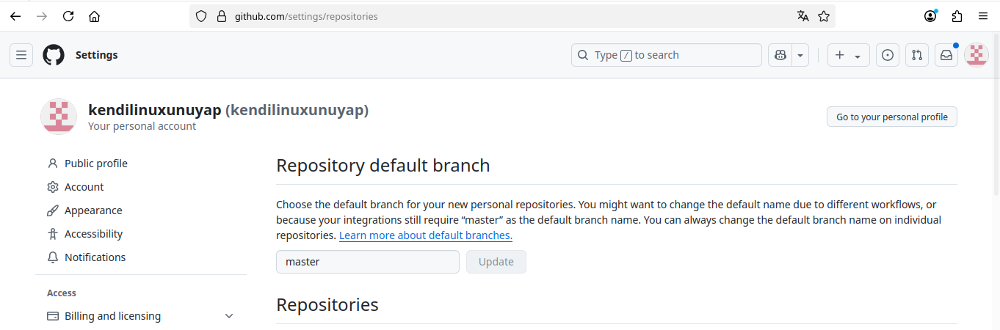
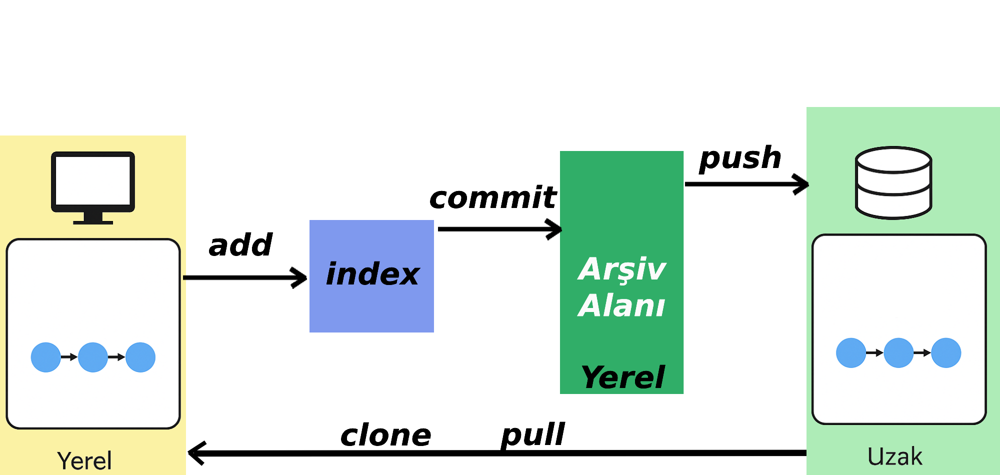
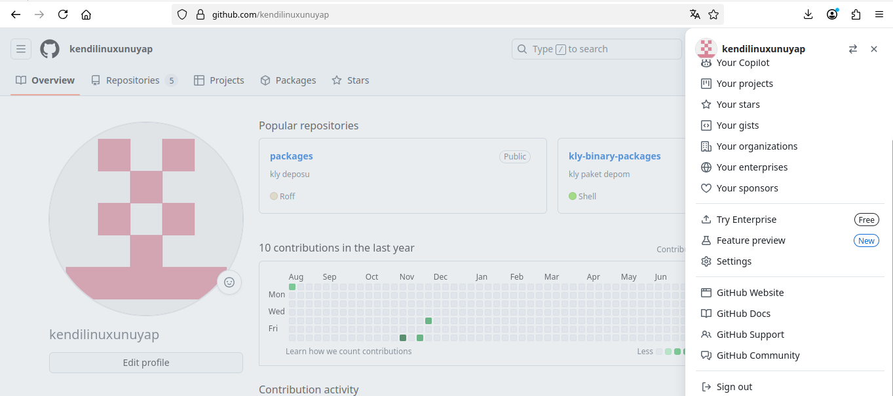
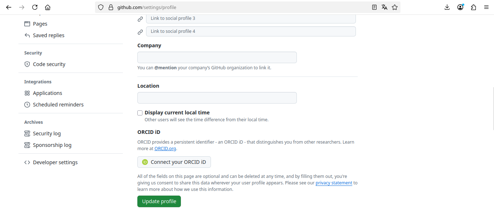
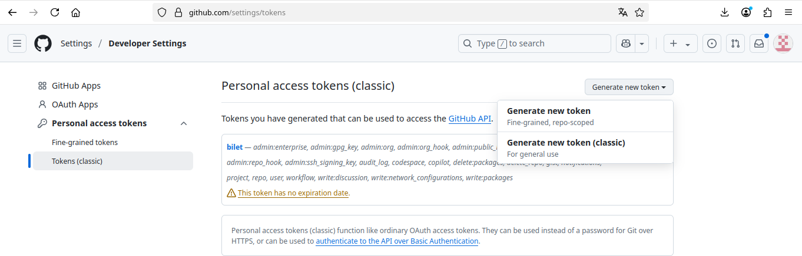
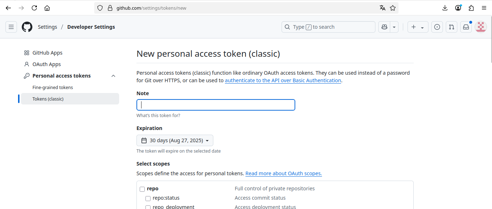
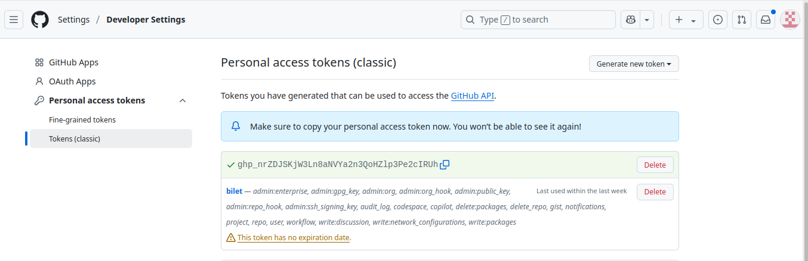

github¶
GitHub üzerinde yeni bir depo açmak oldukça basit bir işlemdir. Aşağıdaki adımları takip ederek hızlıca kendi deponuzu oluşturabilirsiniz:
GitHub Hesabınıza Giriş Yapın¶
GitHub ana sayfasına gidin ve hesabınıza giriş yapın. Eğer bir hesabınız yoksa, öncelikle bir hesap oluşturmalısınız.


Yeni Depo Oluşturma¶
Sağ üst köşede bulunan "+" simgesine tıklayın ve "New repository" seçeneğini seçin.

Depo Bilgilerini Girin¶
Açılan sayfada, depo adını (repository name) ve isteğe bağlı olarak bir açıklama (description) girin. Depo özel (private) veya herkese açık (public) olarak ayarlanabilir.

İlk Dosyayı Oluşturma¶
"Initialize this repository with a README" seçeneğini işaretleyerek, depo oluşturulduğunda otomatik olarak bir README dosyası oluşturabilirsiniz.

github Varsayılan Dal Ayarı:¶
githubda varsayılan olarak eski sürümlerde master, yeni sürümlerde main kullanılmaktadır. Projelerimizde ve burada kullanılan yapılarda master kullanıldığı için aşağıda görülduğü gibi varsalılan dalı master yapıyoruz.
{kind=link}

github komut Kullanımı¶
{kind=link}

github'ın çalışma mantığı yukarıda verilen resimde görüldüğü gibidir. Komutları kullanırken resimdeki gibi işlemleri yapmalıyız.
github'a göndermek için; add --> commit --> push kullanmalıyız.
github'dan indirmek için; clone veya pull kullanmalıyız.
Sık Kullanılan github Komutları¶
Depoyu Yerele indirme(Clone)¶
git clone https://github.com/kullaniciadi/depoadi.git
Yerel Depoda Dosya Ekleme:
git add .
Yerel Depoda Değişiklik Etiketi Yapma:
git commit -m "ilk adım"
Yerel Depodaki Bilgileri Guthuba Gönderme:
git push origin master
Yerel Depodaki Bilgileri Guthuba Gönderme Reddedilirse:
git push origin master --force
Yerelde github'daki Depoyu clone Yapmadan Oluşturma:
cd proje
git init
git config --global user.name "name"
git config --global user.email "name@gmail.com"
git add README.md
git add .
git commit -m "first commit"
git remote -v # push ve pull yapılacak adresleri görmek için kullanılır
git remote add origin https://github.com/userName/repoName.git
git push -u origin master
Dal(Branch):¶
Dal projenin birden fazla kişi ile yapılmasında veya yeni özellikler eklenmek istediğinde projenin bir kopyası ile çalışma gerektirir. Aşağıda dal işlemleri için komutlar verilmiştir.
Yeni Dal Oluşturmak, Seçmek ve Yeni Dalı github'a Göndermek:
# Dalları Görmek kullanılır Seçili olan dalın rengi farklı olur ve önünde * olur
git branch
# Dal oluşturmak
git checkout yeni
# Yeni dalı uzak adrese göndermek
git push --force origin master komutu yerine
# Uzak adresimizde master dalı dışında yeni dalımızda oluşacaktır...
git push --force origin yeni komutunu veriyoruz.
github token Oluşturma Kullanma¶
github kullanırken dosya gondermek(commit) için kullanıcı adı ve parola ister. Burada hesap parolası yerine token kullanılır. Yeni bir token için aşağıdaki işlem adımlarını yapmalıyız.
Settings Seçilir;
{kind=link}

Developper Settings Seçilir;
{kind=link}

Generate New Token Seçilir;
{kind=link}

Erişim yapabileceği alanlar Seçilir;
{kind=link}

token Kullanmak üzere kullanmak üzere saklanır. Bu ekrandan sonra sadece silebiliriz. Göremeyiz kopyalayamayız.
{kind=link}
